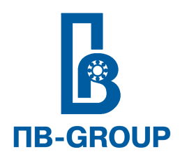

MITEX 2026 · Россия · Стенд 8B501
ПОДШИПНИК ВОЛГА
Карточка проверена 10 ноября 2026, 09:25 · Источник ↗ · Снимок оригинальной карточки ↗
О компании
Подшипник Волга — российская торгово-производственная компания, специализирующаяся на оптовых поставках подшипниковой продукции для всех отраслей промышленности, сельского хозяйства, автомобильного и транспортного сектора. Мы работаем напрямую с ведущими заводами и развиваем собственные бренды: ПВ-GROUP (доступные подшипники для широкого применения), СПЗ-64 (традиционное качество Саратовского завода), KRUPSAR (крупногабаритные подшипники), TORO (премиум-сегмент), SERB (усиленные узлы). Ассортимент включает более 10 000 наименований, постоянно поддерживаемых на складе. Оказываем техническое сопровождение, помогаем с подбором, организуем оперативную логистику по РФ и СНГ. Надежность, наличие и профессиональный подход — наш приоритет.
Контакты
Все контактные сведения из карточки
Контакты г.Саратов, ул. Московская, д.12 Телефон: +78452991659 E-mail: info@pdsar.ru Адрес: 410012, Россия, Саратовская область, Саратов, ул. Московская, д.12 Веб-сайт: https://pdsar.biz/ E-mail: info@pdsar.ru Телефон: +78452991659
Все рубрики участника
Mitex - Рубрикатор
- 2. Садовая техника, инструмент, инвентарь, оборудование, расходные материалы и насосы
Зал
- Зал № 8
Участник выставки
- MITEX
Фотографии и изображения
Видео, каталоги и документы
В доступной карточке нет видео или документов. Смотрите сайт участника.